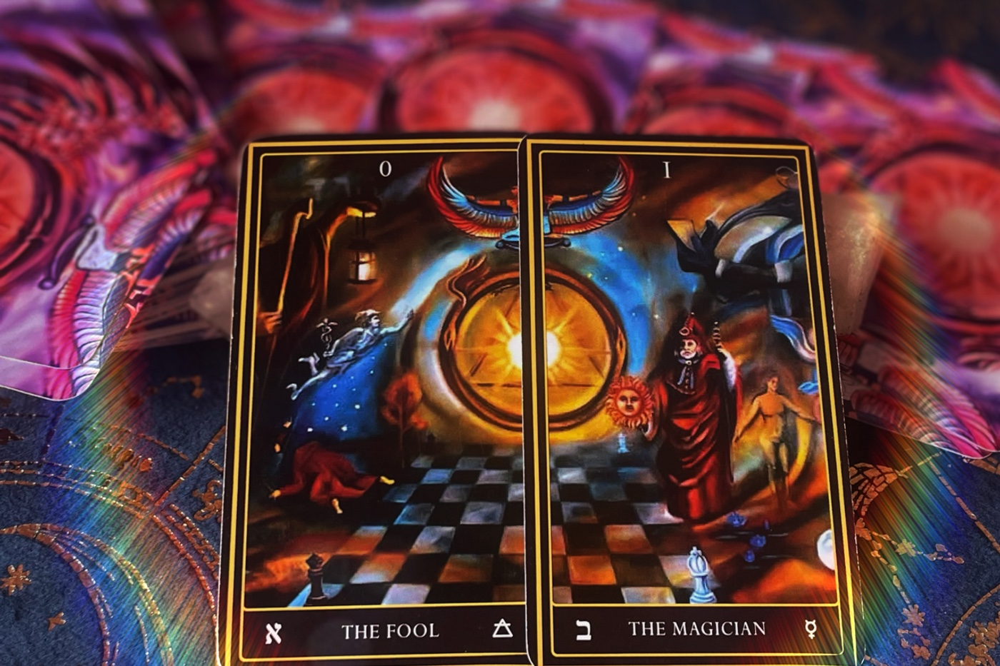
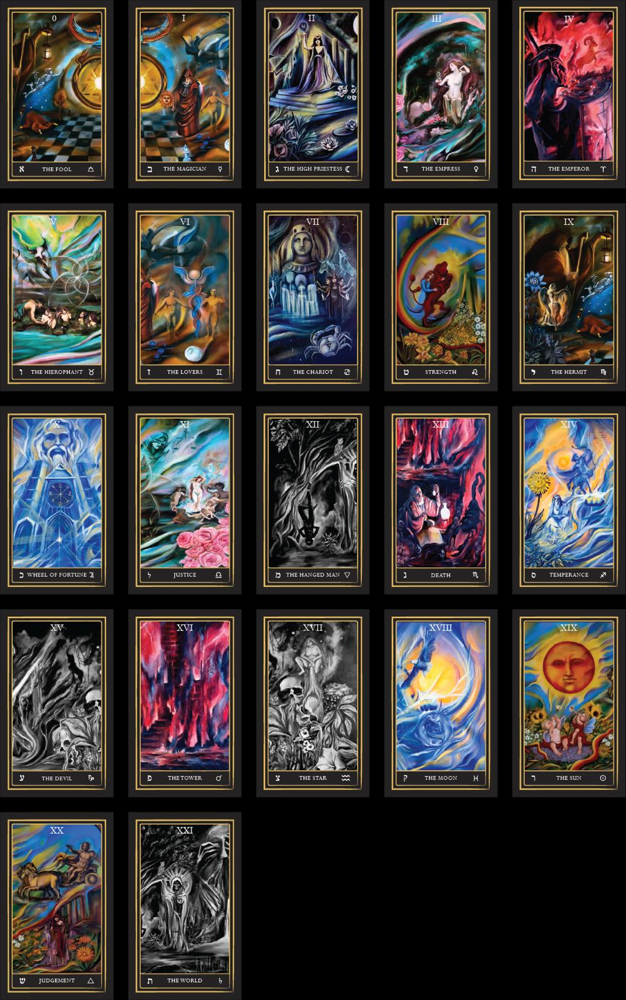
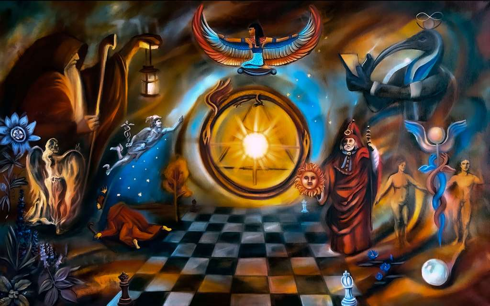

A 78-card tarot deck composed of oil paintings made under astrological timing — drawing from Hermeticism, astrological magic, ceremonial magic, and Kabbalah.

Most tarot decks treat astrology as a footnote. This one starts there — and runs through Hermetic, ceremonial, and Kabbalistic tradition.
Each major arcana corresponds to a planetary or zodiacal force, painted under that influence's astrological timing. Each minor arcana is keyed to the Kabbalistic Tree of Life and a distinct elemental process — the suits painted under the four solstices and equinoxes (Cups at Fall, Pentacles at Winter, Swords at Spring, Wands at Summer).
The art is hand-painted in oil, then printed on heavy linen-finish stock. The deck ships with a guidebook keying every card to its dignity, traditional rulership, and place on the Tree.
All twenty-two majors of the Astro Magician's Tarot — from The Fool to The World, each painted under the dignities, days, and hours of its corresponding planet or sign.

Each card is hand-painted in oil from a unique source painting. Several of the source paintings will be available at the June 15 unveiling.

Before any card was printed, every image was an oil painting on canvas — initiated under specific astrological elections, worked on its planetary day, and built up with the traditional pigments and metals associated with its corresponding force.
Pictured: The Magician — Mercury — Hermit and Virgo painted while Mercury was in Virgo. The deck reproduces this source painting and twenty-one others.
See the Originals on June 15 →Each first-edition deck is signed and numbered, comes in a custom box, and ships with the printed guidebook. Reserve a copy from the shop or reach out for wholesale inquiries.